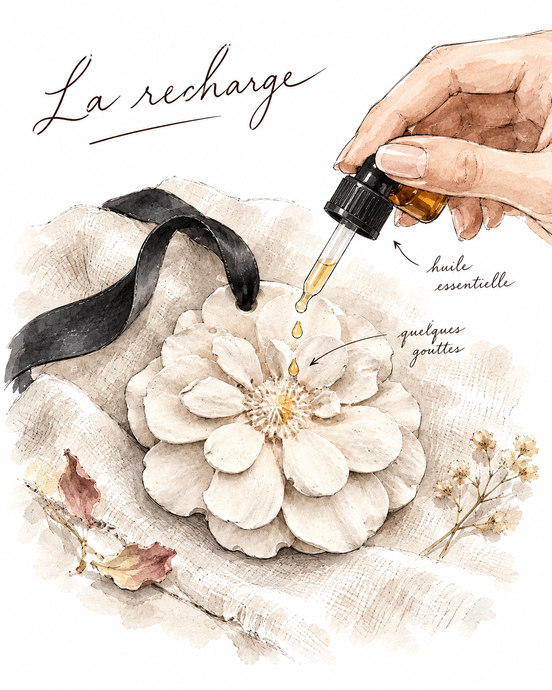
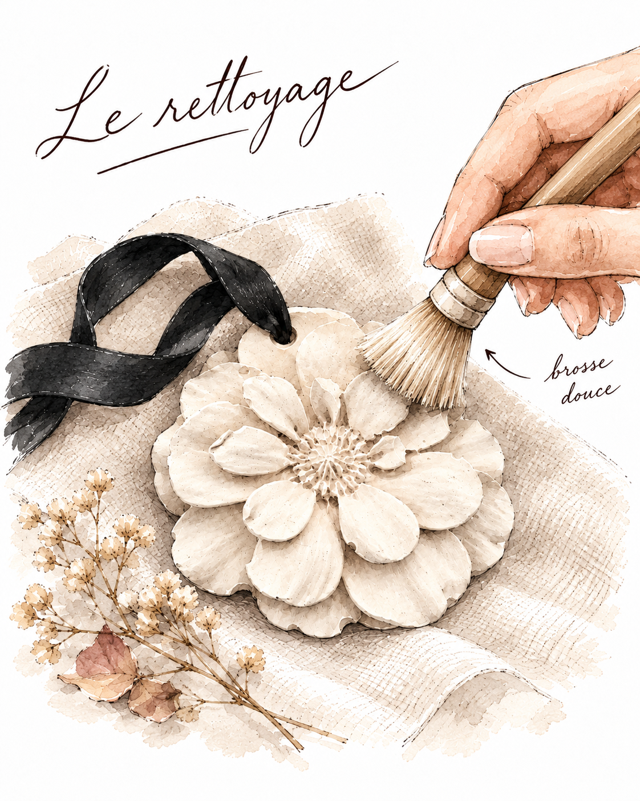
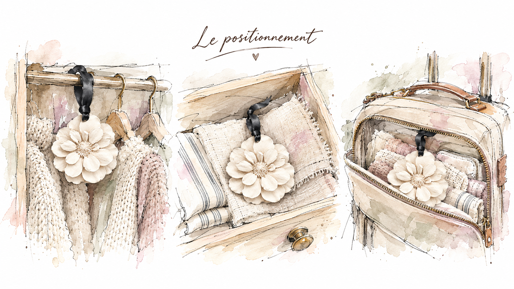
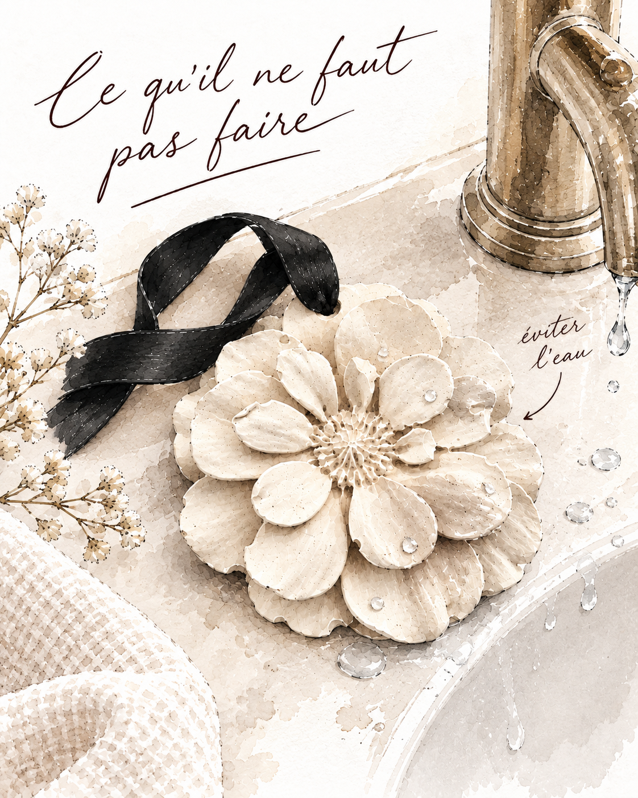

Le médaillon diffuseur Sylfay est en plâtre naturel. Sa surface poreuse absorbe les huiles essentielles et les restitue lentement, pendant plusieurs jours. Un objet simple, efficace, qui demande peu : juste quelques attentions pour durer.
Il medaglione diffusore Sylfay è in gesso naturale. La sua superficie porosa assorbe gli oli essenziali e li rilascia lentamente, per diversi giorni. Un oggetto semplice, efficace, che richiede poche attenzioni per durare a lungo.
La recharge
La ricarica
Déposez quelques gouttes d'huile essentielle directement au centre du médaillon, sur les pétales. Cinq à dix gouttes suffisent. Le plâtre absorbe en quelques minutes. La diffusion commence aussitôt et dure en général deux à quatre jours, selon l'huile choisie. Quand le parfum s'estompe, il suffit de recharger.
Versate qualche goccia di olio essenziale direttamente al centro del medaglione, sui petali. Cinque o dieci gocce sono sufficienti. Il gesso assorbe in pochi minuti. La diffusione inizia subito e dura in genere due o quattro giorni, a seconda dell'olio scelto. Quando il profumo si attenua, basta ricaricare.
Pas besoin de laisser sécher entre deux recharges. Le plâtre supporte l'accumulation des huiles sans se détériorer.
Non è necessario lasciare asciugare tra una ricarica e l'altra. Il gesso tollera l'accumulo degli oli senza deteriorarsi.

Le nettoyage
La pulizia
Le plâtre ne se nettoie pas à l'eau. Jamais. Pour entretenir la surface du médaillon et dégager les résidus d'huile accumulés au fil du temps, utilisez une brosse à poils doux : une brosse à dents souple, un pinceau de maquillage ou un petit blaireau. Un geste doux, circulaire, sur les pétales. C'est tout.
Il gesso non si pulisce con l'acqua. Mai. Per mantenere la superficie del medaglione e rimuovere i residui di olio accumulati nel tempo, usate una spazzola a setole morbide : uno spazzolino da denti morbido, un pennello da trucco o un piccolo pennello da barba. Un gesto delicato, circolare, sui petali. Nient'altro.
Si des taches sombres apparaissent avec le temps, c'est normal : le plâtre patine. Certaines huiles colorent légèrement la surface. C'est la trace du temps, pas un défaut.
Se nel tempo compaiono macchie scure, è normale : il gesso acquista patina. Alcuni oli colorano leggermente la superficie. È il segno del tempo, non un difetto.

Le positionnement
Il posizionamento
Le médaillon est fait pour les espaces fermés et confinés, là où le parfum peut se concentrer et envelopper. Accrochez-le dans une armoire, glissez-le dans un tiroir parmi le linge, emportez-le dans une valise. Il parfume discrètement, sans diffuser dans l'air ambiant.
Il medaglione è pensato per gli spazi chiusi e raccolti, dove il profumo può concentrarsi e avvolgere. Appendetelo in un armadio, infilatelo in un cassetto tra la biancheria, portatelo in valigia. Profuma in modo discreto, senza disperdersi nell'aria ambiente.
Évitez les pièces humides : salle de bain, cuisine près de l'évier. La chaleur et la vapeur fragilisent le plâtre sur le long terme.
Evitate gli ambienti umidi : bagno, cucina vicino al lavello. Il calore e il vapore fragilizzano il gesso nel lungo periodo.

Ce qu'il ne faut pas faire
Cosa evitare
L'eau est l'ennemi principal du plâtre. Ne rincez jamais le médaillon, ne le posez pas sur une surface mouillée, ne le laissez pas dans une pièce très humide. En cas de contact accidentel avec l'eau, épongez doucement avec un tissu sec et laissez sécher à l'air libre, loin de toute source de chaleur directe.
L'acqua è il principale nemico del gesso. Non sciacquate mai il medaglione, non appoggiatelo su superfici bagnate, non lasciatelo in ambienti molto umidi. In caso di contatto accidentale con l'acqua, tamponate delicatamente con un panno asciutto e lasciate asciugare all'aria, lontano da fonti di calore diretto.
Évitez aussi les huiles essentielles très colorées, comme la carotte ou la rose, si vous tenez à conserver le blanc naturel du plâtre.
Evitate anche gli oli essenziali molto colorati, come carota o rosa, se volete conservare il bianco naturale del gesso.

Bien entretenu, un médaillon Sylfay peut durer des années. Le plâtre vieillit bien quand on le respecte : il prend de la patine, garde l'empreinte du temps, et continue de parfumer longtemps.
Ben curato, un medaglione Sylfay può durare anni. Il gesso invecchia bene quando viene rispettato : acquista patina, porta l'impronta del tempo, e continua a profumare a lungo.